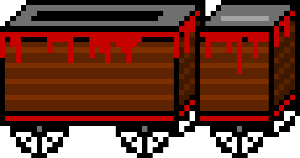

My game is based on 1895’s, “La Charcuterie Mechanique”, or “The Mechanical Butcher”, directed by Louis Lumiere. In the film, a butcher and his assistants place a live pig into a box like device and extract fully prepared cuts of meat from the other side. It’s a short film and the illusion is simple, but it’s entertaining nonetheless. The expedited butchery process seems to poke fun at the meat eaters who would rather not know how their hot dogs are made.  My game will be a single player resource management butchery game. The screen will show only the mechanical butcher device, the visiting customers, the cuts of meat, and potentially a butcher avatar. The butcher will receive orders for specific cuts, click and drag to place either a chicken, pig, or cow into the mechanical butcher, and correctly fill the order under a time constraint. Each animal yields a limited number of each cut (breast, wing, steak, sausage link, prime rib, etc), which may be saved for a different customer but expire after two turns. The player must fulfill the orders quickly and waste as little meat as possible. There will be a profit calculator, equivalent to points, which will be calculated based on an aggregate of speed, waste, and accuracy. I may also add diseased livestock, which the butcher must avoid or risk business failure.